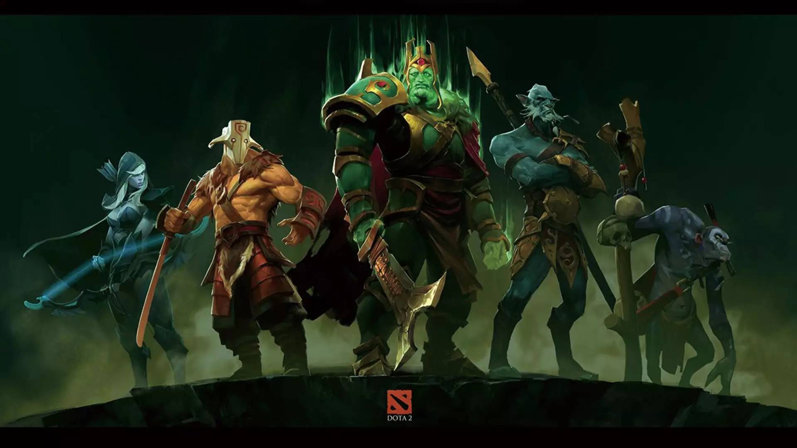

现在我们提起密码学已经不陌生了，密码学是网络安全的基石。如果没有密码学，网络中的绝大多数应用都无从谈起。
给我密码学启蒙的是高一课堂时候一次传小纸条事件。学生时代大家都喜欢传小纸条，那天我收到一张A传给B的纸条，上面写着奇怪的文字，类似于“TYJNNOYEYJJUBH”这种，我看得一脸懵逼，而B收到后拿着笔在纸上写写画画了一番，然后转身对着A笑着比了一个OK的手势。后来他们向我解释了通信原理，若干年后我才意识到他们其实是在用凯撒密码飞鸽传书。我看到的那串莫名其名的数字其实就是一串密文，B涂涂画画的过程就是一个消息解密过程，而他们已经线下协商好了秘钥。那件事给我留下了极为深刻的印象。
凯撒密码：凯撒密码作为一种最为古老的对称加密体制，在古罗马的时候都已经很流行，他的基本思想是：通过把字母移动一定的位数来实现加密和解密。例如，当偏移量是3的时候，所有的字母A将被替换成D，B变成E，以此类推X将变成A，Y变成B，Z变成C。
在正式介绍密码学之前，我们先通过一个小例子来提出一些问题，然后思考一些亟待解决的问题。
现在课堂上A
以简体中文为例，若你需要添加一个菜单项，比如 something。那么就需要修改简体中文对应的翻译文件 languages/zh-Hans.yml，在 menu 字段下添加一项：

密码学历史
凯撒密码示例
1 | package main |
这种加密算法几乎没有安全性，只要最多尝试25次即可试出秘钥；
如果尝试A字母可以和任意字母替换，B在剩余25个字母中寻找替换，那么一共有26！种算法，这个数字已经是很大很大了，但即使是这样也不安全。因为英文中单词中字母出现的概率是有规律的，比如字母“E”出现的频率最高，只要获取大量的密文，就可以基于概率统计学进行破解。
维吉尼亚密码
栅栏密码
对称加密
非对称加密
密码学应用
- https
- ssl
- 数字证书
1 |
|